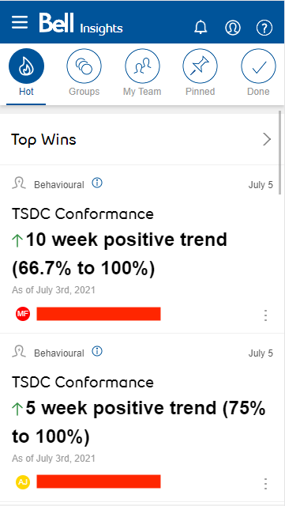

Building Bell Insights: A Mobile App for Coaching
Product Type: Mobile Web Application
User Base: 10K
Company: Bell Canada
The Product
Initiated in 2019, the Bell Insights app was a supplementary product for managers to identify coaching opportunities and wins for their team.

The Role
Serving as a product manager, I facilitated the development of the app from a mock view to a functioning beta product over an 8-month period. To achieve this, I worked with the UX Design team, Developers, and Business Intelligence teams that would serve as a coaching product for the various management teams at Bell.
Core Features
- Customization — users can tailor their data feeds
- Pre-populated coaching logs
- Cross-compatibility with various reporting teams
What I Did
- Hosted weekly virtual meetings, clarified scope, implemented changes, prioritized deliverables, got stakeholder acceptance, and monitored status for performance and budget. Planned WBS schedule.
- Developed an algorithm to rank key Insights based on a feedback system and frequency of Insight types users utilized most.
- Identified and developed key Insights via SQL/SAS to feed the platform.
- Worked with various reporting teams to establish a data structure to feed their data into the mobile platform.
- Implemented Jira and Confluence into engineering and product teams for the Insights app. Assisted in facilitating knowledge transfer.
- Created an internal feedback system for users to highlight and report functionality of the app.
Metrics
- Usage of the app reduced coaching research time by 90%.
- Time to type up a coaching log reduced to a minute with talk-to-text functionality and pre-populated data.
- Users were able to increase coaching discussions monthly by 40% due to the app's benefits.
Key Takeaways
- As a product manager, understood the power of facilitating beta testers and using feedback to improve functionality and design.
- How to work effectively with UX and Design resources.
- How to best manage a remote engineering team when individuals are hard to reach and lack progress.
- As an analyst, learned how to write optimized queries and schedule jobs.